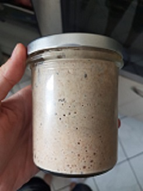

Sauerteig
Zubereitungszeit: 3-4 Tage
Ergibt: 1 Sauerteigansatz

- 120g Vollkornmehl (Weizen der Roggen)
- ca 120ml lauwarmes Wasser
- 30g Vollkornmehl mit ca 30ml Wasser vermischen, sodass eine schleimige Mischung entsteht
- zugedeckt 24 Stunden gehen lassen
- den Sauerteigansetz mit wieder 30g Mehl und 30ml Wasser "füttern", also vermengen
- wieder 24 Stunden abgedeckt gehen lassen und den Vorgang noch 2 Mal wiederholen